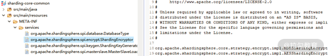
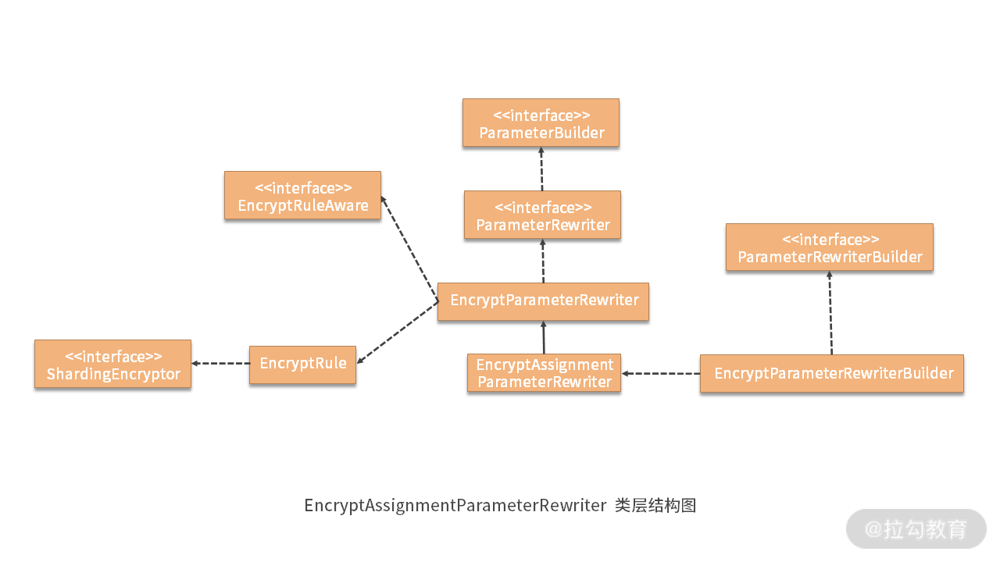

- 00 如何正确学习一款分库分表开源框架？.md.html
- 01 从理论到实践：如何让分库分表真正落地？.md.html
- 02 顶级项目：ShardingSphere 是一款什么样的 Apache 开源软件？.md.html
- 03 规范兼容：JDBC 规范与 ShardingSphere 是什么关系？.md.html
- 04 应用集成：在业务系统中使用 ShardingSphere 的方式有哪些？.md.html
- 05 配置驱动：ShardingSphere 中的配置体系是如何设计的？.md.html
- 06 数据分片：如何实现分库、分表、分库+分表以及强制路由？（上）.md.html
- 07 数据分片：如何实现分库、分表、分库+分表以及强制路由？（下）.md.html
- 08 读写分离：如何集成分库分表+数据库主从架构？.md.html
- 09 分布式事务：如何使用强一致性事务与柔性事务？.md.html
- 10 数据脱敏：如何确保敏感数据的安全访问？.md.html
- 11 编排治理：如何实现分布式环境下的动态配置管理？.md.html
- 12 从应用到原理：如何高效阅读 ShardingSphere 源码？.md.html
- 13 微内核架构：ShardingSphere 如何实现系统的扩展性？.md.html
- 14 分布式主键：ShardingSphere 中有哪些分布式主键实现方式？.md.html
- 15 解析引擎：SQL 解析流程应该包括哪些核心阶段？（上）.md.html
- 16 解析引擎：SQL 解析流程应该包括哪些核心阶段？（下）.md.html
- 17 路由引擎：如何理解分片路由核心类 ShardingRouter 的运作机制？.md.html
- 18 路由引擎：如何实现数据访问的分片路由和广播路由？.md.html
- 19 路由引擎：如何在路由过程中集成多种路由策略和路由算法？.md.html
- 20 改写引擎：如何理解装饰器模式下的 SQL 改写实现机制？.md.html
- 21 执行引擎：分片环境下 SQL 执行的整体流程应该如何进行抽象？.md.html
- 22 执行引擎：如何把握 ShardingSphere 中的 Executor 执行模型？（上）.md.html
- 23 执行引擎：如何把握 ShardingSphere 中的 Executor 执行模型？（下）.md.html
- 24 归并引擎：如何理解数据归并的类型以及简单归并策略的实现过程？.md.html
- 25 归并引擎：如何理解流式归并和内存归并在复杂归并场景下的应用方式？.md.html
- 26 读写分离：普通主从架构和分片主从架构分别是如何实现的？.md.html
- 27 分布式事务：如何理解 ShardingSphere 中对分布式事务的抽象过程？.md.html
- 28 分布式事务：ShardingSphere 中如何集成强一致性事务和柔性事务支持？（上）.md.html
- 29 分布式事务：ShardingSphere 中如何集成强一致性事务和柔性事务支持？（下）.md.html
- 30 数据脱敏：如何基于改写引擎实现低侵入性数据脱敏方案？.md.html
- 31 配置中心：如何基于配置中心实现配置信息的动态化管理？.md.html
- 32 注册中心：如何基于注册中心实现数据库访问熔断机制？.md.html
- 33 链路跟踪：如何基于 Hook 机制以及 OpenTracing 协议实现数据访问链路跟踪？.md.html
- 34 系统集成：如何完成 ShardingSphere 内核与 Spring+SpringBoot 的无缝整合？.md.html
- 35 结语：ShardingSphere 总结及展望.md.html
- 捐赠
30 数据脱敏：如何基于改写引擎实现低侵入性数据脱敏方案？
今天，我们讨论 ShardingSphere 中的数据脱敏模块。通过在 “10 | 数据脱敏：如何确保敏感数据的安全访问？” 课时中的介绍，我们知道 ShardingSphere 提供了一套自动的数据加解密机制来实现透明化的数据脱敏。
数据脱敏模块整体架构
与普通的编程模式一样，对于数据脱敏而言，我们同样先获取一个 DataSource 作为整个流程的入口，当然这里获取的不是一个普通的 DataSource，而是一个专门针对数据脱敏的 EncryptDataSource。对于数据脱敏模块，我们的思路还是从上到下，从 EncryptDataSource 开始进入到 ShardingSphere 数据脱敏的世界中。
同时，我们这次讲解数据脱敏模块不是零基础，因为在前面介绍 ShardingDataSource、ShardingConnection、ShardingStatement 等内容时，已经对整个 SQL 执行流程的抽象过程做了全面介绍，所涉及的很多内容对于数据脱敏模块而言也都是适用的。
让我们结合下图来做一些回顾：

上图中，可以看到与数据脱敏模块相关的类实际上都继承了一个抽象类，而这些抽象类在前面的内容都已经做了介绍。因此，我们对数据脱敏模块将重点关注于几个核心类的讲解，对于已经介绍过的内容我们会做一些回顾，但不会面面俱到。
基于上图，我们从 EncryptDataSource 开始入手，EncryptDataSource 的创建依赖于工厂类 EncryptDataSourceFactory，其实现如下所示：
public final class EncryptDataSourceFactory {
public static DataSource createDataSource(final DataSource dataSource, final EncryptRuleConfiguration encryptRuleConfiguration, final Properties props) throws SQLException {
return new EncryptDataSource(dataSource, new EncryptRule(encryptRuleConfiguration), props);
}
}
这里直接创建了一个 EncryptDataSource，依赖于 EncryptRule 规则对象，我们先来梳理一下 EncryptRule 中具体包含了哪些内容。
EncryptRule
EncryptRule 是数据脱敏模块的一个核心对象，值得我们专门进行展开。在 EncryptRule 中，定义了如下所示的三个核心变量：
//加解密器
private final Map<String, ShardingEncryptor> encryptors = new LinkedHashMap<>();
//脱敏数据表
private final Map<String, EncryptTable> tables = new LinkedHashMap<>();
//脱敏规则配置
private EncryptRuleConfiguration ruleConfiguration;
我们可以把这三个变量分成两部分，其中 ShardingEncryptor 用于完成加解密，而 EncryptTable 和 EncryptRuleConfiguration 则更多的与数据脱敏的配置体系相关。
接下来我将对这两部分分别展开讲解。
1.ShardingEncryptor
在 EncryptRule 中，ShardingEncryptor 是一个接口，代表具体的加密器类，该接口定义如下：
public interface ShardingEncryptor extends TypeBasedSPI {
//初始化
void init();
//加密
String encrypt(Object plaintext);
//解密
Object decrypt(String ciphertext);
}
ShardingEncryptor 接口中存在一对用于加密和解密的方法，同时该接口也继承了 TypeBasedSPI 接口，意味着会通过 SPI 的方式进行动态类加载。
ShardingEncryptorServiceLoader 完成了这个工作，同时在 sharding-core-common 工程中，我们也找到了 SPI 的配置文件，如下所示：

ShardingEncryptor 的 SPI 配置文件
可以看到这里有两个实现类，分别是 MD5ShardingEncryptor 和 AESShardingEncryptor。对于 MD5 算法而言，我们知道它是单向散列的，无法根据密文反推出明文，MD5ShardingEncryptor 的实现类如下所示：
public final class MD5ShardingEncryptor implements ShardingEncryptor {
private Properties properties = new Properties();
@Override
public String getType() {
return "MD5";
}
@Override
public void init() {
}
@Override
public String encrypt(final Object plaintext) {
return DigestUtils.md5Hex(String.valueOf(plaintext));
}
@Override
public Object decrypt(final String ciphertext) {
return ciphertext;
}
}
而 AES 是一个对称加密算法，所以可以根据密文反推出明文，对应的 AESShardingEncryptor 如下所示：
public final class AESShardingEncryptor implements ShardingEncryptor {
private static final String AES_KEY = "aes.key.value";
private Properties properties = new Properties();
@Override
public String getType() {
return "AES";
}
@Override
public void init() {
}
@Override
@SneakyThrows
public String encrypt(final Object plaintext) {
byte[] result = getCipher(Cipher.ENCRYPT_MODE).doFinal(StringUtils.getBytesUtf8(String.valueOf(plaintext)));
//使用 Base64 进行加密
return Base64.encodeBase64String(result);
}
@Override
@SneakyThrows
public Object decrypt(final String ciphertext) {
if (null == ciphertext) {
return null;
}
//使用 Base64 进行解密
byte[] result = getCipher(Cipher.DECRYPT_MODE).doFinal(Base64.decodeBase64(String.valueOf(ciphertext)));
return new String(result, StandardCharsets.UTF_8);
}
private Cipher getCipher(final int decryptMode) throws NoSuchPaddingException, NoSuchAlgorithmException, InvalidKeyException {
Preconditions.checkArgument(properties.containsKey(AES_KEY), "No available secret key for `%s`.", AESShardingEncryptor.class.getName());
Cipher result = Cipher.getInstance(getType());
result.init(decryptMode, new SecretKeySpec(createSecretKey(), getType()));
return result;
}
private byte[] createSecretKey() {
Preconditions.checkArgument(null != properties.get(AES_KEY), String.format("%s can not be null.", AES_KEY));
//创建秘钥
return Arrays.copyOf(DigestUtils.sha1(properties.get(AES_KEY).toString()), 16);
}
}
这里就是对一些常用加密库的直接使用，不做展开讨论。
2.EncryptRuleConfiguration
我们接下来关注于 EncryptRule 中的第二组变量，即 EncryptTable，以及与之相关的配置类 EncryptRuleConfiguration 之间的关系。
我们先来看 EncryptRuleConfiguration，内部包含了两部分内容：
private final Map<String, EncryptorRuleConfiguration> encryptors;
private final Map<String, EncryptTableRuleConfiguration> tables;
而在 EncryptTableRuleConfiguration 内部，同样保存着一个 EncryptColumnRuleConfiguration 列表，如下所示：
private final Map<String, EncryptColumnRuleConfiguration> columns = new LinkedHashMap<>();
我们再来看 EncryptColumnRuleConfiguration 的数据结构，如下所示：
public final class EncryptColumnRuleConfiguration {
//存储明文的字段
private final String plainColumn;
//存储密文的字段
private final String cipherColumn;
//辅助查询字段
private final String assistedQueryColumn;
//加密器名字
private final String encryptor;
}
终于，我们在这里看到了指定存放明文的 plainColumn、存放密文的 cipherColumn，以及加密器 encryptor 等信息。
我们可以回顾案例中的相关配置项来加深理解：
spring.shardingsphere.encrypt.tables.encrypt_user.columns.user_name.plainColumn=user_name_plain
spring.shardingsphere.encrypt.tables.encrypt_user.columns.user_name.cipherColumn=user_name
spring.shardingsphere.encrypt.tables.encrypt_user.columns.user_name.encryptor=name_encryptor
我们回到最上层的 EncryptRule，发现它的构造函数如下所示：
public EncryptRule(final EncryptRuleConfiguration encryptRuleConfig) {
this.ruleConfiguration = encryptRuleConfig;
Preconditions.checkArgument(isValidRuleConfiguration(), "Invalid encrypt column configurations in EncryptTableRuleConfigurations.");
initEncryptors(encryptRuleConfig.getEncryptors());
initTables(encryptRuleConfig.getTables());
}
上述 initEncryptors 方法就是初始化加解密器 Encryptor，而 initTables 方法会根据 EncryptRuleConfiguration 中的 EncryptTableRuleConfiguration 来初始化 EncryptTable。这里的 EncryptTable 更多是一种中间领域模型，用于简化对各种配置信息的处理，其内部保存着一个 EncryptColumn 列表，如下所示：
private final Map<String, EncryptColumn> columns;
而这个 EncryptColumn 中的变量则跟前面介绍的 EncryptColumnRuleConfiguration 一样，包含了存放明文的 plainColumn、存放密文的 cipherColumn，以及加密器 encryptor 等信息。
在了解了 EncryptRule 中所持有的数据模型之后，我们就可以来看一下 EncryptDataSource，在 EncryptDataSource 的构造函数中使用到了 EncryptRule，如下所示：
private final EncryptRuntimeContext runtimeContext;
public EncryptDataSource(final DataSource dataSource, final EncryptRule encryptRule, final Properties props) throws SQLException {
super(dataSource);
runtimeContext = new EncryptRuntimeContext(dataSource, encryptRule, props, getDatabaseType());
}
可以看到所传入的 EncryptRule 和 Properties 是用来构建一个 EncryptRuntimeContext，该类继承自 AbstractRuntimeContext 类，而 EncryptRuntimeContext 内部主要保存了用于描述表元数据的 TableMetas 数据结构。
基于改写引擎的数据脱敏实现方案
我们知道 EncryptDataSource 继承了适配器类 AbstractDataSourceAdapter，而它的作用就是生成 EncryptConnection。而对于 EncryptConnection，我们同样也明确它的职责是创建各种 EncryptStatement 和 EncryptPreparedStatement，如下所示：
@Override
public Statement createStatement() throws SQLException {
return new EncryptStatement(this);
}
@Override
public PreparedStatement prepareStatement(final String sql) throws SQLException {
return new EncryptPreparedStatement(this, sql);
}
然后，我们再快速来到 EncryptStatement，来看它的 executeQuery 方法，如下所示：
@Override
public ResultSet executeQuery(final String sql) throws SQLException {
if (Strings.isNullOrEmpty(sql)) {
throw new SQLException(SQLExceptionConstant.SQL_STRING_NULL_OR_EMPTY);
}
//获取改写后的 SQL 并执行
ResultSet resultSet = statement.executeQuery(getRewriteSQL(sql));
this.resultSet = new EncryptResultSet(connection.getRuntimeContext(), sqlStatementContext, this, resultSet);
return this.resultSet;
}
显然这里需要重点关注的是 getRewriteSQL 方法，该方法用于获取改写后的 SQL，如下所示：
private String getRewriteSQL(final String sql) {
//通过 ParseEngine 对 SQL 进行解析
SQLStatement sqlStatement = connection.getRuntimeContext().getParseEngine().parse(sql, false);
//获取关系元数据 RelationMetas
RelationMetas relationMetas = getRelationMetas(connection.getRuntimeContext().getTableMetas());
//构建 SQLStatementContext
sqlStatementContext = SQLStatementContextFactory.newInstance(relationMetas, sql, Collections.emptyList(), sqlStatement);
//构建 SQLRewriteContext
SQLRewriteContext sqlRewriteContext = new SQLRewriteContext(relationMetas, sqlStatementContext, sql, Collections.emptyList());
//判断是否根据数据脱敏列进行查询
boolean isQueryWithCipherColumn = connection.getRuntimeContext().getProps().<Boolean>getValue(ShardingPropertiesConstant.QUERY_WITH_CIPHER_COLUMN);
//构建 EncryptSQLRewriteContextDecorator 对 SQLRewriteContext 进行装饰
new EncryptSQLRewriteContextDecorator(connection.getRuntimeContext().getRule(), isQueryWithCipherColumn).decorate(sqlRewriteContext);
//生成 SQLTokens
sqlRewriteContext.generateSQLTokens();
//使用 DefaultSQLRewriteEngine 进行改写
String result = new DefaultSQLRewriteEngine().rewrite(sqlRewriteContext).getSql();
//打印结果
showSQL(result);
//返回结果
return result;
}
这个方法的部分代码有一种让人似曾相识的感觉，我们回想一下 “20 | 改写引擎：如何理解装饰器模式下的 SQL 改写实现机制？” 中介绍的 BaseShardingEngine的rewriteAndConvert 方法，也看到过 isQueryWithCipherColumn 判断，以及 EncryptSQLRewriteContextDecorator，当时我们没有具体展开，今天就来一起看一下。
1.EncryptSQLRewriteContextDecorator
EncryptSQLRewriteContextDecorator 实现如下所示：
public final class EncryptSQLRewriteContextDecorator implements SQLRewriteContextDecorator {
private final EncryptRule encryptRule;
private final boolean isQueryWithCipherColumn;
@Override
public void decorate(final SQLRewriteContext sqlRewriteContext) {
//参数改写
for (ParameterRewriter each : new EncryptParameterRewriterBuilder(encryptRule, isQueryWithCipherColumn).getParameterRewriters(sqlRewriteContext.getRelationMetas())) {
if (!sqlRewriteContext.getParameters().isEmpty() && each.isNeedRewrite(sqlRewriteContext.getSqlStatementContext())) {
each.rewrite(sqlRewriteContext.getParameterBuilder(), sqlRewriteContext.getSqlStatementContext(), sqlRewriteContext.getParameters());
}
}
//SQLTokenGenerator 初始化
sqlRewriteContext.addSQLTokenGenerators(new EncryptTokenGenerateBuilder(encryptRule, isQueryWithCipherColumn).getSQLTokenGenerators());
}
}
我们还是来对比 ShardingSQLRewriteContextDecorator 类，会发现它与 EncryptSQLRewriteContextDecorator 类的结构完全一致。区别在于这里创建的 ParameterRewriterBuilder 和 SQLTokenGeneratorBuilder 分别是 EncryptParameterRewriterBuilder 和 EncryptTokenGenerateBuilder，而不是ShardingParameterRewriterBuilder 和 ShardingTokenGenerateBuilder。但这两组类的内部结构同样是完全一致的。
在 EncryptParameterRewriterBuilder 内部，同样使用如下方法获取一组 ParameterRewriter：
private Collection<ParameterRewriter> getParameterRewriters() {
Collection<ParameterRewriter> result = new LinkedList<>();
result.add(new EncryptAssignmentParameterRewriter());
result.add(new EncryptPredicateParameterRewriter());
result.add(new EncryptInsertValueParameterRewriter());
return result;
}
接下来，我们先以 EncryptAssignmentParameterRewriter 为例来看用于数据脱敏的具体 ParameterRewriter 的实现机制。
2.EncryptAssignmentParameterRewriter
EncryptAssignmentParameterRewriter 类完成在数据脱敏场景下对参数赋值过程的改写。我们首先注意到 EncryptAssignmentParameterRewriter 中存在一个 isNeedRewriteForEncrypt 方法用于判断是否需要改写。
@Override
protected boolean isNeedRewriteForEncrypt(final SQLStatementContext sqlStatementContext) {
return sqlStatementContext.getSqlStatement() instanceof UpdateStatement
|| sqlStatementContext instanceof InsertSQLStatementContext && sqlStatementContext.getSqlStatement().findSQLSegment(SetAssignmentsSegment.class).isPresent();
}
这里的判断条件有两个，一个是 UpdateStatement，一个是 InsertSQLStatementContext（且其中的 SQLStatement 中包含 SetAssignmentsSegment）。我们知道在 SQL 语法中，INSERT 和 UPDATE 语句中都具有如下所示的 SET 赋值部分：
SET userId = 1, task_name = 'taskName'
EncryptAssignmentParameterRewriter 类针对的就是这种场景。我们来看它的 Rewrite 核心方法，如下所示：
@Override
public void rewrite(final ParameterBuilder parameterBuilder, final SQLStatementContext sqlStatementContext, final List<Object> parameters) {
String tableName = sqlStatementContext.getTablesContext().getSingleTableName();
//获取 SetAssignmentsSegment 并进行遍历
for (AssignmentSegment each : getSetAssignmentsSegment(sqlStatementContext.getSqlStatement()).getAssignments()) {
//判断是否存在 ShardingEncryptor
if (each.getValue() instanceof ParameterMarkerExpressionSegment && getEncryptRule().findShardingEncryptor(tableName, each.getColumn().getName()).isPresent()) {
StandardParameterBuilder standardParameterBuilder = parameterBuilder instanceof StandardParameterBuilder
? (StandardParameterBuilder) parameterBuilder : ((GroupedParameterBuilder) parameterBuilder).getParameterBuilders().get(0);
//对参数进行加密
encryptParameters(standardParameterBuilder, tableName, each, parameters);
}
}
}
这里通过 getSetAssignmentsSegment 方法获取 SetAssignmentsSegment，实现过程就是根据 SQLStatement 类型分别获取 InsertStatement 和 UpdateStatement 中的 SetAssignment。
然后，我们循环遍历每一个 SetAssignmentsSegment，针对表中的每一个 Column 判断是否存在 ShardingEncryptor，如果有的话就返回对应的加解密器。
这部分判断工作就是在前面介绍的 EncryptRule 中完成，如下所示：
public Optional<ShardingEncryptor> findShardingEncryptor(final String logicTable, final String logicColumn) {
if (!tables.containsKey(logicTable)) {
return Optional.absent();
}
Optional<String> encryptor = tables.get(logicTable).findShardingEncryptor(logicColumn);
return encryptor.isPresent() ? Optional.of(encryptors.get(encryptor.get())) : Optional.<ShardingEncryptor>absent();
}
然后我们获取 StandardParameterBuilder，并调用 encryptParameters 方法完成参数的数据脱敏操作，如下所示：
private void encryptParameters(final StandardParameterBuilder parameterBuilder, final String tableName, final AssignmentSegment assignmentSegment, final List<Object> parameters) {
String columnName = assignmentSegment.getColumn().getName();
int parameterMarkerIndex = ((ParameterMarkerExpressionSegment) assignmentSegment.getValue()).getParameterMarkerIndex();
Object originalValue = parameters.get(parameterMarkerIndex);
//通过 ShardingEncryptor 进行加密，并替换原来存储密文的 cipherColumn
Object cipherValue = getEncryptRule().getEncryptValues(tableName, columnName, Collections.singletonList(originalValue)).iterator().next();
parameterBuilder.addReplacedParameters(parameterMarkerIndex, cipherValue);
Collection<Object> addedParameters = new LinkedList<>();
//如果存在 assistedQueryColumn，则添加辅助查询字段
if (getEncryptRule().findAssistedQueryColumn(tableName, columnName).isPresent()) {
Object assistedQueryValue = getEncryptRule().getEncryptAssistedQueryValues(tableName, columnName, Collections.singletonList(originalValue)).iterator().next();
addedParameters.add(assistedQueryValue);
}
//如果存在 plainColumn，则添加明文字段
if (getEncryptRule().findPlainColumn(tableName, columnName).isPresent()) {
addedParameters.add(originalValue);
}
if (!addedParameters.isEmpty()) {
parameterBuilder.addAddedParameters(parameterMarkerIndex + 1, addedParameters);
}
}
这里的核心逻辑就是继续通过 EncryptRule 的 getEncryptValues 方法获取密文，然后通过获取具体的 ShardingEncryptor 并调用其方法完成这一操作，如下所示：
public List<Object> getEncryptValues(final String logicTable, final String logicColumn, final List<Object> originalValues) {
final Optional<ShardingEncryptor> shardingEncryptor = findShardingEncryptor(logicTable, logicColumn);
Preconditions.checkArgument(shardingEncryptor.isPresent(), String.format("Can not find ShardingQueryAssistedEncryptor by %s.%s.", logicTable, logicColumn));
return Lists.transform(originalValues, new Function<Object, Object>() {
@Override
public Object apply(final Object input) {
return null == input ? null : String.valueOf(shardingEncryptor.get().encrypt(input.toString()));
}
});
}
关于 EncryptAssignmentParameterRewriter 的实现，这里面涉及的类也比较多，我们可以先来画张图作为后续讨论的基础，如下所示：

3.EncryptAssignmentTokenGenerator
讨论完 EncryptParameterRewriterBuilder 之后，我们再来讨论 EncryptTokenGenerateBuilder。这里，我们也是以 EncryptAssignmentTokenGenerator 为例来进行展开，在这个类中，核心方法是 generateSQLTokens，如下所示：
@Override
public Collection<EncryptAssignmentToken> generateSQLTokens(final SQLStatementContext sqlStatementContext) {
Collection<EncryptAssignmentToken> result = new LinkedList<>();
String tableName = sqlStatementContext.getTablesContext().getSingleTableName();
//获取 SetAssignmentsSegment 并进行遍历
for (AssignmentSegment each : getSetAssignmentsSegment(sqlStatementContext.getSqlStatement()).getAssignments()) {
//判断是否存在 ShardingEncryptor
if (getEncryptRule().findShardingEncryptor(tableName, each.getColumn().getName()).isPresent()) {
//生成 SQLToken
Optional<EncryptAssignmentToken> sqlToken = generateSQLToken(tableName, each);
if (sqlToken.isPresent()) {
result.add(sqlToken.get());
}
}
}
return result;
}
这里同样根据是否找到 ShardingEncryptor 来执行后续的 generateSQLToken 方法，该方法最终会调用类似如下所示的 generateLiteralSQLToken 方法：
private EncryptAssignmentToken generateLiteralSQLToken(final String tableName, final AssignmentSegment assignmentSegment) {
EncryptLiteralAssignmentToken result = new EncryptLiteralAssignmentToken(assignmentSegment.getColumn().getStartIndex(), assignmentSegment.getStopIndex());
addCipherAssignment(tableName, assignmentSegment, result);
addAssistedQueryAssignment(tableName, assignmentSegment, result);
addPlainAssignment(tableName, assignmentSegment, result);
return result;
}
以上面的 addCipherAssignment 方法为例，我们不难想象该方法通过调用 ShardingEncryptor 来完成了 CipherColumn 的设置。
private void addCipherAssignment(final String tableName, final AssignmentSegment assignmentSegment, final EncryptLiteralAssignmentToken token) {
Object originalValue = ((LiteralExpressionSegment) assignmentSegment.getValue()).getLiterals();
Object cipherValue = getEncryptRule().getEncryptValues(tableName, assignmentSegment.getColumn().getName(), Collections.singletonList(originalValue)).iterator().next();
token.addAssignment(getEncryptRule().getCipherColumn(tableName, assignmentSegment.getColumn().getName()), cipherValue);
}
至此，我们对 EncryptSQLRewriteContextDecorator 的介绍就告一段落，这部分内容可以结合 “20 | 改写引擎：如何理解装饰器模式下的 SQL 改写实现机制？” 一起来看，以便加深理解。
数据脱敏和结果归并
介绍完了 EncryptSQLRewriteContextDecorator 之后，接下来我们回到 EncryptStatement 类，继续探讨 getRewriteSQL 方法的后续流程。
我们回到 EncryptStatement 的 executeQuery 方法，回顾如下语句：
ResultSet resultSet = statement.executeQuery(getRewriteSQL(sql));
我们通过执行 executeQuery 方法获取了 ResultSet，但并不是直接返回这个 resultSet 对象，而是需要对其进行封装，构建一个 EncryptResultSet 对象，如下所示：
this.resultSet = new EncryptResultSet(connection.getRuntimeContext(), sqlStatementContext, this, resultSet);
EncryptResultSet 继承了 AbstractUnsupportedOperationResultSet 类，而 AbstractUnsupportedOperationResultSet 又继承了 AbstractUnsupportedUpdateOperationResultSet，这个 AbstractUnsupportedUpdateOperationResultSet 又继承了 WrapperAdapter 类并实现了 ResultSet 接口。所以 EncryptResultSet 也是一种适配器，这点和 EncryptDataSource、EncryptConnection 在本质上是一样的。
对于 EncryptResultSet 而言，存在一大批 get 方法，我们都不需要专门进行介绍，关键点在于构造函数中的如下方法：
mergedResult = createMergedResult(queryWithCipherColumn, resultSet);
我们知道 ShardingSphere 中，执行引擎之后就是归并引擎，而在 EncryptResultSet 中我们就用到了归并引擎并生成了 MergedResult。
EncryptResultSet 会先判断传入的 SQLStatement 是否是一种 DALStatement，如果是，则会调用 DALEncryptMergeEngine 完成结果归并；如果不是，则会使用 DQLEncryptMergeEngine，我们同样重点关注 DQLEncryptMergeEngine。
public final class DQLEncryptMergeEngine implements MergeEngine {
private final EncryptorMetaData metaData;
private final MergedResult mergedResult;
private final boolean queryWithCipherColumn;
@Override
public MergedResult merge() {
return new EncryptMergedResult(metaData, mergedResult, queryWithCipherColumn);
}
}
DQLEncryptMergeEngine 非常简单，其 merge 方法只是构建了一个 EncryptMergedResult 对象并进行返回。EncryptMergedResult 中核心方法 getValue 如下所示：
@Override
public Object getValue(final int columnIndex, final Class<?> type) throws SQLException {
Object value = mergedResult.getValue(columnIndex, type);
if (null == value || !queryWithCipherColumn) {
return value;
}
Optional<ShardingEncryptor> encryptor = metaData.findEncryptor(columnIndex);
return encryptor.isPresent() ? encryptor.get().decrypt(value.toString()) : value;
}
显然，从上述流程中不难看出，数据脱敏模块中的归并实现实际上就是调用 ShardingEncryptor 的 decrypt 方法将加密列的密文解密成明文即可。
这样整个 EncryptStatement 的 executeQuery 方法的整体流程就介绍完毕了，理解了这个方法的实现过程之后，对于 EncryptStatement 和 EncryptPreparedStatement 的其他方法而言，理解起来就比较容易了。
从源码解析到日常开发
对于今天讨论的主题而言，能够直接应用到日常开发过程中的内容就是 ShardingEncryptor 的抽象过程，以及内部的加解密实现机制。ShardingSphere 使用了 DigestUtils 工具类来完成 MD5 算法的应用，以及 Base64 工具类来完成AES算法的实现。
这两个工具类都可以完全照搬到我们自己的系统中，从而添加成熟的加解密算法实现方案。
小结与预告
今天，我们讨论了 ShardingSphere 中实现数据脱敏机制的底层原理。我们发现数据脱敏模块同时依赖于分片引擎中的改写引擎和归并引擎这两大块内容，尤其是改写引擎在数据脱敏过程中起到了核心作用，通过补列的方式完成明文数据与密文数据之间的自动加解密，以及透明的 SQL 转换过程。
这里留一道思考题：ShardingSphere 中，数据脱敏模块与改写引擎和归并引擎之间是怎么样的协作关系？欢迎你在留言区与大家讨论，我将逐一点评解答。
在介绍完今天的数据脱敏机制之后，明天将介绍一个同样非常有用的编排和治理功能，我们将基于配置中心解析实现配置信息动态化管理的底层原理。
© 2019 - 2023 Liangliang Lee. Powered by gin and hexo-theme-book.